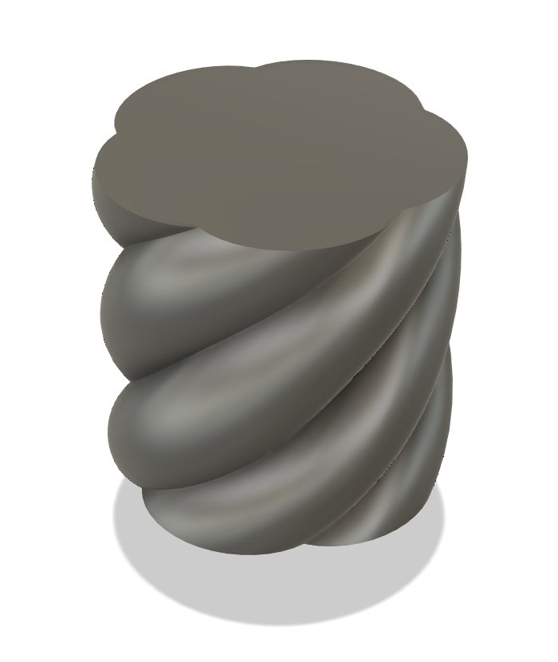
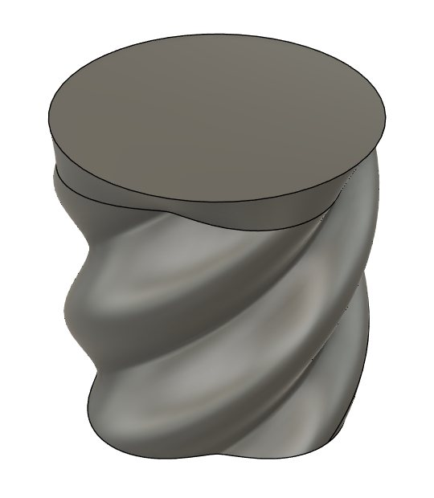
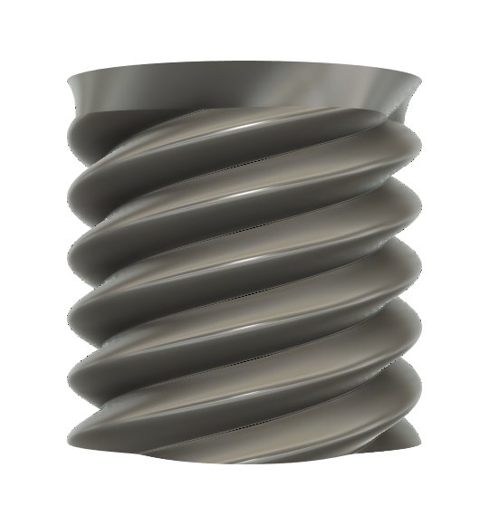
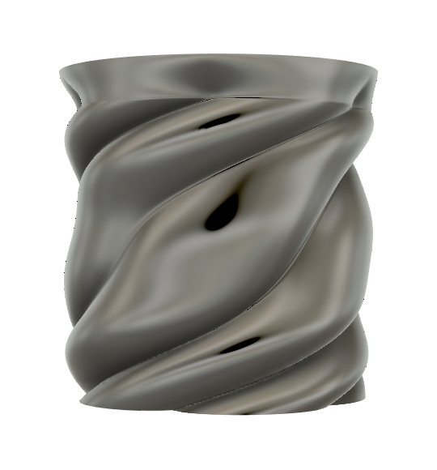
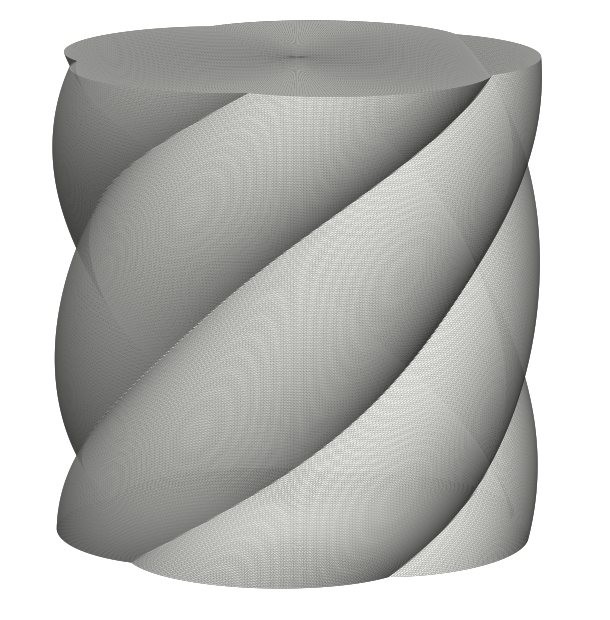
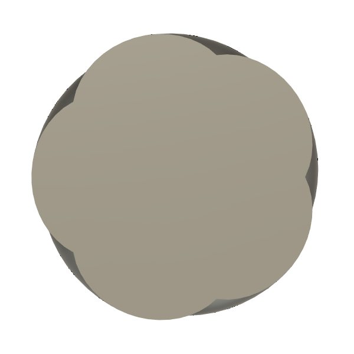

Case study · AI-assisted CAD · Fusion 360 · 3D printing
Designing in Fusion 360 with an AI agent
In progressSample not printed yet
A retail display plinth for a sneaker launch: a soft, twisted “cloud” column that a single shoe stands on. I connected an AI agent to Fusion 360, directed it in plain language through four design rounds, and ended the same afternoon with a parametric Fusion model that is set up to print in one piece on my Bambu Lab H2D.

01 · Brief
A soft shape that still prints clean
The reference was a puffy, rope-like column. The sample had to be 315 mm wide, 320 mm high and white, printed in one piece on the H2D, which only just fits that diameter. So it had to look soft inside a tight build volume, with no support marks on a white surface.
I set the size, finish and printer limits, judged every render, gave the design notes and decided when it was done. I never typed a sketch dimension by hand.
A native, parametric Fusion 360 model: five helix paths, a round tube swept along each, joined to a centre core and trimmed flat. Plus an STL exported from it for printing.
In progress. The model and the print file are done. The next step is to print the sample and check it on the real machine.
02 · Architecture
I direct, the AI drafts, Fusion holds the model
The AI agent had a live connection to Fusion 360 on my laptop through Fusion's API connector. It wrote the modelling scripts and ran them inside Fusion. Then it took screenshots of the result and measured the overhangs. The model itself only ever lives in Fusion. The agent sees it through scripts and screenshots, and I see it in Fusion and in the renders.
Diagram is wide: scroll it sideways, or open it full size to zoom. Open full size

The agent never edits a mesh file behind Fusion’s back: every change is a script run inside Fusion, so the result is a normal Fusion design I can open and edit.
03 · Design flow
From brief to parameters, model, export and print
The brief turned into a handful of numbers. Those numbers drive the model, and the model is checked before anything is exported. When a check or my eye said no, the loop went back to the parameters with one note.
Diagram is wide: scroll it sideways, or open it full size to zoom. Open full size

04 · Directing the AI
Four rounds of plain-language feedback
- Round 1, smooth sweep. The first lofts rippled between sections, so the AI rebuilt the shape as one twisted sweep. It was clean, but plain.
- Round 2, “Double the swirls”. More twist turned it into a screw thread. The undersides went nearly flat, which would need supports.
- Round 3, “Not threads, make it flow up like the render”. The AI generated the surface in Python so the twist could vary up the height. My note back: the tubes looked squeezed.
- Round 4, “The tubes must be a consistent diameter”. Five true round tubes of equal size. That was the look, and it stays printable.




05 · Workflow
Where the human review sits
The AI does the drafting and the measuring. Every decision about what is right stays with me: each round ends at my review, and nothing is exported until I sign off.
Diagram is wide: scroll it sideways, or open it full size to zoom. Open full size

06 · Printability and native CAD
Checked by numbers, then rebuilt as a real Fusion model
For every version the AI measured how much of the side surface faces downward more steeply than 45°, the usual limit for printing without supports. The final shape scores zero, so it should print with no supports and no scars to sand off a white finish.
A generated mesh prints fine but is hard to edit, so I had the AI rebuild the final version as native Fusion features: five helix paths, a round tube swept along each, joined to a centre core, then trimmed flat. If the client asks for thicker tubes or more twist, it is a one-number change.

07 · Security and privacy
Client confidentiality, and what stays on my laptop
- ConfidentialThe client is never named. No client or brand name appears on this page, in its images or in its file names. The reference image from the brief is not shown. The only pictures are my own plain grey renders of the model, and the page is set to noindex.
- LocalFusion and the model run on my laptop. The Fusion session, the scripts it runs and the exported STL are all on my machine. The agent reaches Fusion only through the API connector.
- Leaves the laptopThe AI agent is a cloud model. My notes, the scripts it writes and the screenshots it takes pass through it. So the conversation should hold only what the design needs: dimensions, finish and shape, not client documents.
- Runs codeThe agent runs its own scripts inside Fusion. That is what makes it fast, and it is also the main risk: the code runs with Fusion’s access on my laptop. My review covered the renders and the numbers each round.
08 · Stack, results, limits, next
The facts
Stack
Autodesk Fusion 360 for the parametric model. An AI agent (Claude) connected to Fusion through its API connector, writing and running the modelling scripts; round 3 used a Python-generated surface. STL export for printing. Bambu Lab H2D 3D printer, one piece.
Results
- Brief to print file in one afternoon, over four rounds of plain-language notes.
- The final shape measures 0% of side area steeper than 45°, so it is designed to print without supports.
- Exactly 315 mm across, so it fits the H2D in one piece with no seams.
- A native, parametric Fusion model, not just a mesh: tube size and twist are editable numbers.
- I never typed a sketch dimension by hand; my time went into judging the look and the printability.
Limitations
- Not printed yet. The 0% figure is a geometry check on the model, not proof from the machine; the first layer and the lobe undersides are still to be tested.
- The agent sees the design only through scripts and screenshots, so the judgement of what looks right is mine, round by round.
- The round 3 surface was a generated mesh that is hard to edit, which is why the final version had to be rebuilt as native features.
- It is one design made in one afternoon, not a reusable tool.
What’s next
- Print the sample on the H2D.
- Check the first layer and the lobe undersides on the real machine.
- Fillet the top edge if the client wants it softer.
Client and brand are deliberately not named.